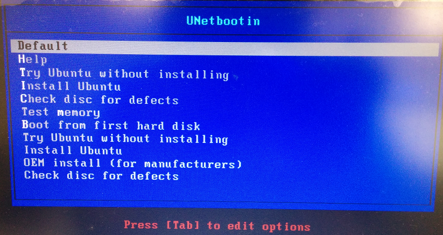
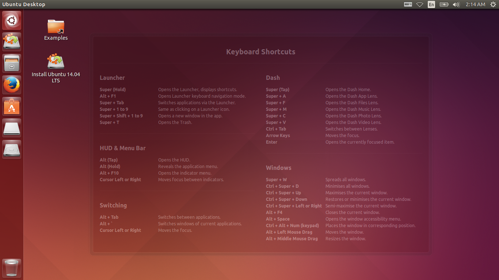

- Windows、Linux または Mac OS X が使用できる64bit CPU搭載のノート型コンピュータ（以下PC） （下記操作は、このPC上で行います。）
- 容量4GB以上（8GB推奨）の空のUSBメモリ
- PCがUSB3.0対応（コネクタの中心部が青い）の場合は、USB3.0対応USBメモリを推奨
- PCがUSB2.0対応の場合は、USB2.0対応USBメモリを使用
手順
- 下記URLから、Ubuntu Linuxのディスクイメージをダウンロードします。（1.2GB）
- 下記URLから、Live USB作成ソフトをダウンロードします。
Windows、Mac OS Xの場合：https://unetbootin.github.io/
ページ中の、Live USB作成に使用しているPCのOSを選択してください。

Linux (ubuntu)の場合：下記コマンドを実行 $ sudo apt-get install unetbootin
- 事故防止のため、使用しないUSBメモリや、メモリーカードを取り外し、使用するUSBメモリのみを接続します。使用するUSBメモリは、ファイルが入っていない、空の状態にして下さい。
- 下記の手順でLive USB作成ソフトを起動します。
ダウンロードした unetbootin-windows-???.exe（Windowsの場合）を実行します。
下記、「WindowsによってPCが保護されました」画面が現れた場合は、「実行」ボタンをクリックしてください。

また、下記のユーザアカウント制御画面が現れた場合、「はい」をクリックしてください。

- 下記の手順でLive USBを作成します。
ダウンロードした unetbootin-windows-???.exe（Windowsの場合）を実行します。
Unetbootinの画面で、「ディスクイメージ」を選択し、「…」ボタンをクリックして先ほどダウンロードした、ubuntu-rsj2016-s99.iso ファイルを選択します。また、「スペースは、リブートしてもファイルを維持するために使用」欄に「4096」と入力し、「ドライブ」欄で、使用するUSBメモリのドライブ名を選択します。内容を確認後、「OK」をクリックしてください。

完了まで、しばらく待機します。（USB2.0の場合10分以上、書き込み速度の遅いメモリだと30分程度かかる場合があります。）
下記の「永続性を設定する」画面で、応答なしと表示される場合がありますが、正常に動作していますので、そのまま待機してください。

下記画面が表示されれば、「Live USB」の作成は完了です。終了をクリックして下さい。

- Live USBから起動するためのBIOSの設定を行います。
セミナーで使用するPCの電源を切り、下記の手順で作成したLive USBを接続した状態で起動します。起動時に、BIOS設定画面に入ります。PCのメーカー毎に入り方が異なりますので、マニュアル等で確認してください。図はAcerの例です。

BIOS設定画面に入ったら、起動順（Boot order, Boot priority）の設定で、USBメモリが最優先になるように設定します。 （表示は使用しているPCおよびUSBメモリのメーカーによって異なります。）


設定を保存して再起動します。

- Live USBからセミナーで使用するUbuntuを起動します。
下記のような選択画面が表示されたら、「Default」または「Try Ubuntu without installing」を選択して、Enterを押してください。
 - しばらく待って、下記のような画面が表示されれば、セミナーの準備は完了です。初回起動時は、この画面が表示されるまでに時間がかかる場合があります。
HDD/SSDを消去してしまう可能性があるので、ここでは、デスクトップの「Ubuntu 14.04 LTSのインストール」は実行しないように注意して下さい。
